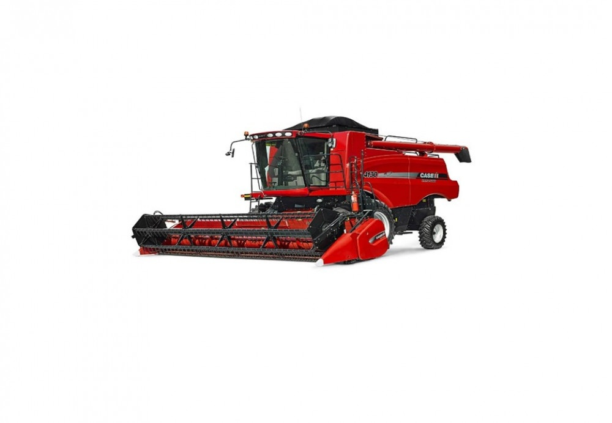
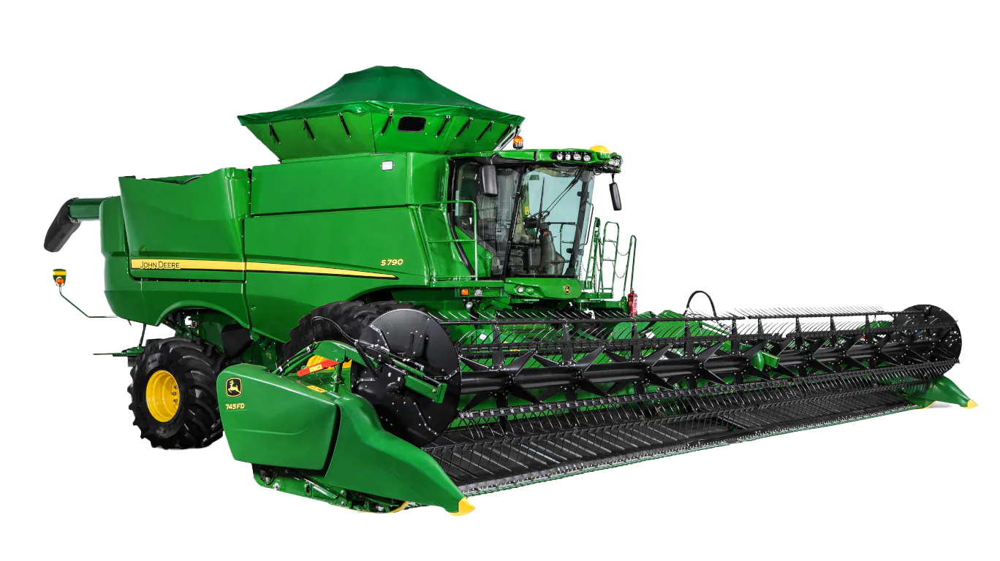

O Modelo ST (ou M.ST), é o modelo de colheitadeira que identifica uma fazenda diferente ao lado, e "sem querer" pega uma partexinha da plantação do vizinho.

Modelo focado em identificar o ph do solo e seu estado nutricional enquanto ele faz a colheita.